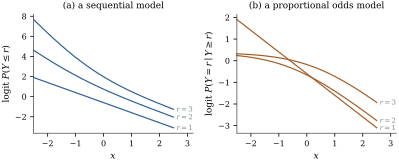

36.4 Sequential models
The cumulative models of the last two sections treat an ordered response as a coarsened continuum. Some ordered responses are not like that. A student reaches a master’s degree only by passing through a bachelor’s; an unemployment spell reaches its second year only by surviving its first. There the categories are stages, reached in order, and each stage is a decision taken by those who got that far. A model built on that picture asks, for each stage, a question conditional on having reached it.
With
be the continuation ratios, or
discrete stopping probabilities. The sequential
model with link
for a continuous, strictly increasing distribution
function
Two features are visible at once. The sequential
model is not symmetric in the direction of the
scale: reversing the categories reverses which
conditional probabilities are modelled. And the
cutpoints are completely free, since Eq. 36.4.3
delivers a probability distribution for any
36.4.1. The likelihood falls apart
Let
Consequently:
(a) the log-likelihood is
(b) if the parameters
(c)
Proof. Count exponents on the two
sides of Eq. 36.4.4. On
the left, substituting Eq. 36.4.3,
the factor
(a) Take logarithms of Eq. 36.4.4 and sum over
(b) A sum of functions of disjoint groups of parameters is maximized by maximizing each separately, and its second derivative matrix is block diagonal with the
(c) Write the multinomial mass function as
Idea. A sequential model is barely
a multinomial model at all: it is
Let the slopes be common,
Proof. With
The expanded data set has
36.4.2. The complementary log-log link joins the two families
The cumulative and sequential families are genuinely different — except at one link, where they are the same.
Take
which are automatically increasing. The map
Proof. Since
This is the observation of Läärä and Matthews (1985),
and it explains why the complementary log-log link is
the natural one for stage data: by Eq. 36.2.5 the
same model is a grouped proportional hazards model, with

36.4.3. The two families on the same data
The self-placement data of Example (A seven-point scale) are not a stage process — nobody becomes extremely conservative by first passing through “extremely liberal” — but the sequential model is still a parameterization of the seven category probabilities, and comparing the fits shows what each family buys.
The at-risk counts are 944, 928, 825, 678, 422 and
252, and the expanded data set has 4049 rows. One binary
logistic regression on it, as in Corollary 36.4.2,
gives cutpoints
Akaike’s criterion is 3254.60 for the sequential
model against 3245.71 for proportional odds (Definition 29.2.2):
with nine parameters each, the cumulative model
describes these data better, as a scale of opinion
rather than a ladder of stages should. Letting every
stage have its own slopes raises the log-likelihood to
import numpy as np
import statsmodels.api as sm
anes = sm.datasets.anes96.load_pandas().data
y = anes["selfLR"].astype(int).to_numpy()
X = np.column_stack([anes["age"] / 10.0, anes["educ"], anes["income"]])
n, p = X.shape
c = 7
def seq_probs(theta, beta, X, F=lambda z: 1.0 / (1.0 + np.exp(-z))):
"""Category probabilities of the sequential model with P(Y = r | Y >= r) = F(theta_r - x'beta)."""
delta = F(theta[None, :] - (X @ beta)[:, None])
surv = np.column_stack([np.ones(len(X)), np.cumprod(1.0 - delta, axis=1)])
return np.column_stack([delta * surv[:, :-1], surv[:, -1]])
def seq_loglik(theta, beta, X, y, F=lambda z: 1.0 / (1.0 + np.exp(-z))):
P = seq_probs(theta, beta, X, F)
return float(np.sum(np.log(P[np.arange(len(y)), y - 1])))With cut-specific slopes the fit is Theorem 36.4.1(b): one logistic regression per stage, on the subjects still at risk.
# unrestricted sequential model: one binary logistic fit per stage, on those still at risk
stage_beta, stage_ll = [], 0.0
for r in range(1, c):
at_risk = y >= r
Z = np.column_stack([np.ones(at_risk.sum()), -X[at_risk]])
fit_r = sm.Logit((y[at_risk] == r).astype(float), Z).fit(disp=0)
stage_beta.append(np.asarray(fit_r.params))
stage_ll += fit_r.llf
print(f"stage {r}: at risk {at_risk.sum():4d}, stop {int((y == r).sum()):4d}, "
f"theta {fit_r.params[0]:7.4f}, beta {np.round(fit_r.params[1:], 4)}")
print(f"sum of the {c - 1} binary log-likelihoods: {stage_ll:.4f}")With a common slope the fit is Corollary 36.4.2: one logistic regression on the expanded data.
# common slope: one binary logistic regression on the expanded data set
rows_X, rows_y = [], []
for i in range(n):
for r in range(1, min(y[i], c - 1) + 1): # stages this respondent reached
stage = np.zeros(c - 1)
stage[r - 1] = 1.0
rows_X.append(np.concatenate([stage, -X[i]]))
rows_y.append(float(y[i] == r))
Xe, ye = np.array(rows_X), np.array(rows_y)
fit_seq = sm.Logit(ye, Xe).fit(disp=0)
theta_seq, beta_seq = fit_seq.params[:c - 1], fit_seq.params[c - 1:]
se_seq = fit_seq.bse[c - 1:]
ll_seq = seq_loglik(theta_seq, beta_seq, X, y)
print(f"expanded data: {len(ye)} rows from {n} respondents")
print("cutpoints", np.round(theta_seq, 4))
print("slopes ", np.round(beta_seq, 4), " se", np.round(se_seq, 4))
print(f"binary log-likelihood {fit_seq.llf:.4f} = multinomial log-likelihood {ll_seq:.4f}")Changing the link to the complementary log-log turns
the same expanded regression into a cumulative model, by
Proposition 36.4.3.
The script computes the cumulative cutpoints from Eq. 36.4.5 and
confirms that the two ways of assembling the category
probabilities agree to within
# Laara and Matthews: with a complementary log-log link the sequential model IS a cumulative model
cll = lambda z: 1.0 - np.exp(-np.exp(z))
fit_cll = sm.GLM(ye, Xe, family=sm.families.Binomial(sm.families.links.CLogLog())).fit()
theta_t, beta_c = fit_cll.params[:c - 1], fit_cll.params[c - 1:]
theta_cum = np.log(np.cumsum(np.exp(theta_t))) # the cumulative model's cutpoints
P_step = seq_probs(theta_t, beta_c, X, F=cll) # built stage by stage
gamma_cum = cll(theta_cum[None, :] - (X @ beta_c)[:, None]) # built from cumulative probabilities
P_cum = np.diff(np.column_stack([np.zeros(n), gamma_cum, np.ones(n)]), axis=1)
print("sequential cutpoints ", np.round(theta_t, 4))
print("cumulative cutpoints ", np.round(theta_cum, 4))
print("largest difference between the two sets of fitted probabilities:",
float(np.max(np.abs(P_step - P_cum))))Generate 4000 observations from a four-stage
sequential logit model with one standard normal
regressor, cutpoints
The moral is not that one family is better — reverse the simulation and the verdict reverses with it — but that the choice is a modelling decision about how the response came about, on which the data have plenty to say.
# a mechanism that really is sequential, fitted by both models
def simulate_sequential(n, theta, beta, rng):
X = rng.normal(size=(n, len(beta)))
delta = 1.0 / (1.0 + np.exp(-(theta[None, :] - (X @ beta)[:, None])))
stop = rng.random(delta.shape) < delta
y = np.where(stop.any(axis=1), stop.argmax(axis=1) + 1, len(theta) + 1)
return X, y
rng = np.random.default_rng(20360436)
theta0, beta0 = np.array([-0.6, 0.0, 0.5]), np.array([1.0])
Xs, ys = simulate_sequential(4000, theta0, beta0, rng)
print("simulated counts:", np.bincount(ys)[1:])36.4.4. Choosing a family
Three families are now available: the cumulative model (Definition 36.2.1), the sequential model (Definition 36.4.1) and, through Exercise (C1), adjacent-category logits. They are non-nested, have the same dimension in their common-slope forms, and often fit real data about equally well, so a criterion such as AIC will decline to choose. The mechanism should choose.
- Cumulative when the categories are a graded measurement of something continuous: severity, agreement, quality. Its slope is invariant to how the scale was cut (Theorem 36.3.1), which makes results comparable across studies.
- Sequential when the categories are stages that must be passed through, especially for durations and attainments. Its coefficients describe one transition at a time, and Theorem 36.4.1 makes cut-specific slopes cheap.
- Adjacent-category when local
comparisons are the meaningful ones: category
None of them addresses overdispersion relative to the multinomial. Chapter 38 treats quasi-likelihood and overdispersion, and Chapter 40 the random-effects models that repeated categorical measurements need.
36.4.5. Exercises
A. Check your understanding
How many parameters has the sequential model with common slopes? With stage-specific slopes? How many rows has the expanded data set of Corollary 36.4.2 when every subject falls in the last category?
Solution. Common slopes:
Show by a three-category example that reversing the order of the categories changes the sequential model, but not the cumulative one (Exercise (A1)).
B. Practice
Interpret
Solution. From the proof of Proposition 36.4.3,
C. Going deeper
Let
Solution. The contribution of an
uncensored subject is
Does the sequential model have a collapsing invariance like Theorem 36.3.1(b)? Show that merging the last two categories leaves the model and the remaining parameters intact, but merging any other adjacent pair does not.